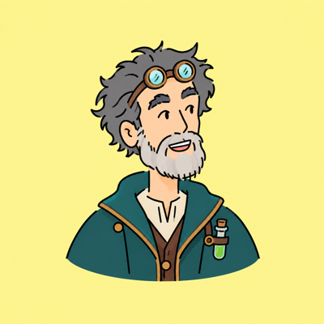
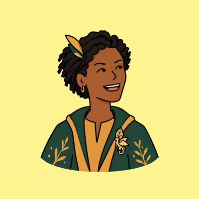

Meet Our Faculty
The College of Magic and Sorcery is home to some of the most accomplished magical scholars in the known world. Our faculty bring centuries of combined experience to the classroom, laboratory, and field.
Chair, Department of Spellcraft
Professor Aldwell holds a Doctor of Sorcery from the Arcane Institute of Edinburgh and has taught advanced incantation theory at USU for over two decades. Her research focuses on the phonological structure of spoken spells and how vowel shifts affect spell potency.

Department of Potions and Alchemical Sciences
Professor Crowne is a leading authority on volatile reagents and low-temperature alchemy. He joined the College as a founding faculty member and has authored three widely used texts on potion stability.

Department of Magical Creature Studies
Professor Mthembu earned her M.M.A. from the University of Cape Town and her D.S. from USU. Her field research on sentient plant communication has been recognized by the International Magical Research Council.